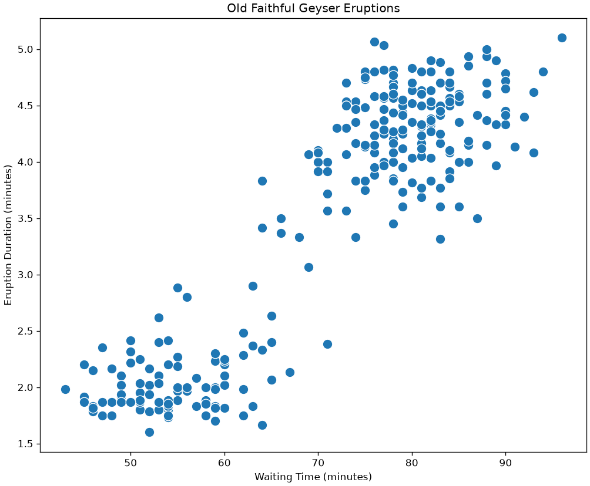
Clustering
When we deal with complex datasets of multiple observations and variables, it can be useful to be able to understand the underlying structure of the data.
One approach to do so is to determine whether the data can be grouped into clusters containing points with similar characteristics. This can be useful in different application scenarios in data analysis:
- Customer Segmentation:
- Grouping customers based on their purchasing behavior, preferences, or demographics for targeted marketing strategies.
- Image Segmentation:
- Dividing an image into meaningful segments or regions based on similarity, aiding in object recognition and computer vision tasks.
- Text Document Clustering:
- Grouping similar documents together based on their content for tasks such as topic modeling, document organization, and information retrieval.
- Speech and Audio Processing:
- Clustering audio data for tasks such as speaker identification, music genre classification, and speech analysis.
- E-commerce:
- Grouping products or users based on purchasing patterns to optimize inventory management and improve the user experience.
Problem Definition
Clustering aims to break the data into distinct group with similar properties. Let us consider the “Old Faithful” dataset, which comprises 272 observations of the eruption of the Old Faithful geyser at the Yellowstone National Park in USA. Each observation includes two variables:
- The duration of the eruption in minutes;
- The time in minutes to the next eruption.
We can see each observation as 2D vector which can be plotted in a Cartesian coordinate system:
We can see how we clearly have two kinds of eruptions:
- Short eruptions followed by other eruptions in a short time (bottom left);
- Long eruptions followed by other eruptions in a long time (upper right).
A clustering algorithm aims to automatically find the two groups and assign each data point to the most likely group. Note that the two groups will be referred generically as “cluster i”, meaning that the algorithm will not assign any semantic meaning to the clusters, but it will aim to put “similar” data points in the same cluster.
Let
\mathbf{X} = \left\{ \mathbf{x}^{(i)} \right\}_{i = 1}^{N},\ \mathbf{x}^{(i)} \in \mathfrak{R}^{n}
be a set of observations. The goal of clustering is to split \mathbf{X} into K groups (called clusters):
S = \{ S_{1},S_{2},\ldots,S_{K}\}
Such that:
\forall\ \mathbf{x}^{(i)} \in \mathbf{X}\ \exists!S_{j} \in S\ :\mathbf{x}^{(i)} \in S_{j}
The clusters are expected to be such that elements within a group are similar to each other, whereas elements belonging to different groups are different from each other.
The number of clusters \mathbf{K} is often a hyper-parameter of the algorithm.
Graphical Example
For instance, consider the following 2D points:
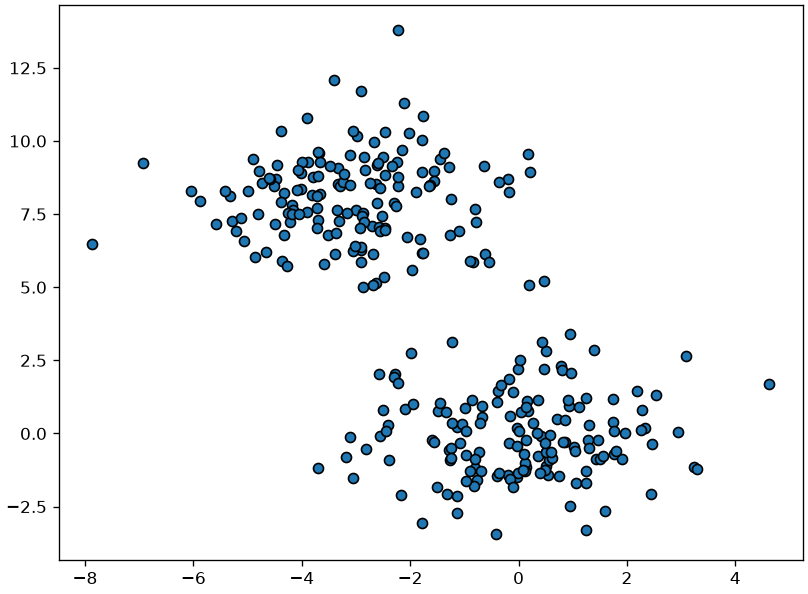
Even if we the points are not explicitly assigned to given groups (i.e., we are not observing any discrete variable y indicating the group to which each point belong), we can clearly see that there are two distinct groups (the one in the top-left part of the plot, and the one in bottom-right). The goal of clustering is to split the data into two groups, as it is shown below:
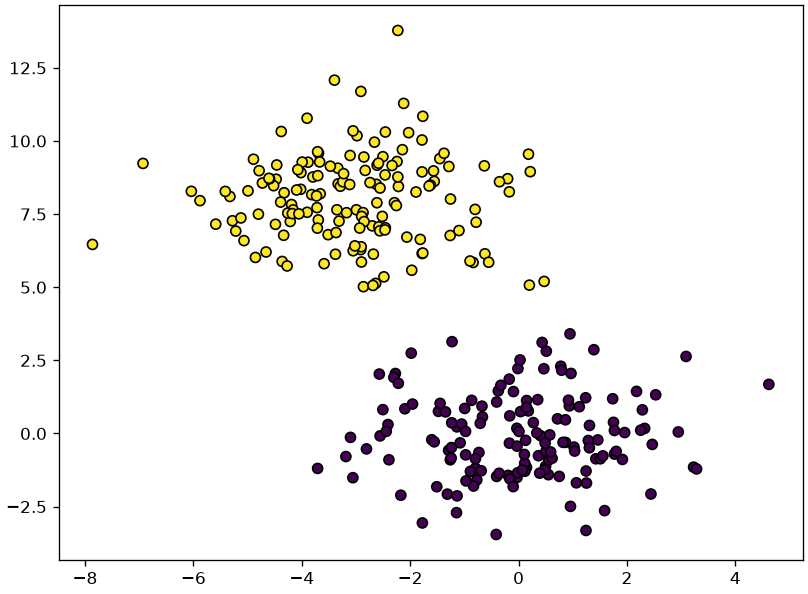
Also note that, while different possible partitions of the 2D points are possible, the one outlined in the plot guarantees that points within the same group are similar to one another (i.e., their Euclidean distance is small), whereas points from different groups have are dissimilar (i.e., their Euclidean distance is large).
K-Means Clustering
K-Means is the most popular clustering algorithm. As in the definition we just gave of clustering, the goal of K-Means is to break the data
\mathbf{X} = \left\{ \mathbf{x}^{(i)} \right\}_{i = 1}^{N},\ \mathbf{x}^{(i)} \in \mathfrak{R}^{n}
into K clusters
S = \{ S_{1},S_{2},\ldots,S_{K}\}
such that:
\forall\ \mathbf{x}^{(i)} \in \mathbf{X}\ \exists!S_{j} \in S\ :\mathbf{x}^{(i)} \in S_{j}
More specifically, K-Means attempts to create K clusters which are as compact as possible, where K is a parameter specified by the user (its application may depend on the application).
We will start by defining K different vectors \mathbf{\mu}_k \in \Re^n which will act as prototypes for our clusters. We will shortly see that these vectors will be the cluster’s centers.
Hence, we define N \times K binary variables r_{ij} which will allow us to establish a mapping between data points \mathbf{x}^{(i)} and clusters S_j. In particular, we will define:
r_{ij} = \begin{cases}1 & \text{ if } \mathbf{x}^{(i)} \in S_j \\ 0 & \text{ otherwise} \end{cases}
The notion that clusters should be as compact as possible is formalized by defining the following cost function, which is sometimes called also distortion function:
J = \sum_{j=1}^K \sum_{i=1}^N r_{ij} ||\mathbf{x}_i-\mathbf{\mu}_j||^2
Note that this function J is the total Within-Cluster Sum of Squares (WCSS).
For a single cluster S_j, the term \sum_{i=1}^N r_{ij} ||\mathbf{x}_i-\mathbf{\mu}_j||^2 is the sum of squared distances of all points in that cluster from its center. This is a measure of the cluster’s inertia or “compactness.”
The goal of K-Means is to find the set of centroids \{\mathbf{\mu}_j\} and assignments \{r_{ij}\} that minimizes this total inertia J.
The K-Means problem is solved by finding a partition \widehat{S} minimizing the cost function:
\{\hat r_{ij}\}_{ij}, \{ \hat{\mathbf{\mu}_j} \}_j = \arg{\min{\sum_{j = 1}^{K}{\sum_{i = 1}^{N}{r_{ij}\left\| \mathbf{x}^{(i)} - \mathbf{\mu}_{j} \right\|^{2}}}}}
Optimization
The minimization above can be performed using an iterative algorithm. The first step of the algorithm is to choose K random centroids \mathbf{\mu}_{i}. After this initialization, the algorithm iterates the following two steps:
Assignment
Eeach element \mathbf{x} is assigned to the set with the closest centroid
r_{ij} = \begin{cases}1 & \text{ if } j=\arg_k\min ||\mathbf{x}^{(i)}-\mathbf{\mu}_j||^2 \\ 0 & \text{otherwise} \end{cases}, \forall i,j
Which will lead to the partition:
S_{i} = \left\{ \mathbf{x} \in \mathbf{X} :\ \left\| \mathbf{x} - \mathbf{\mu}_{i} \right\|^{2} \leq \left\| \mathbf{x} - \mathbf{\mu}_{j} \right\|^{2}\ \ \forall\ j \in \left\{ 1,\ldots K \right\} \right\}
Update
The centroids \mathbf{\mu}_{i} are re-computed from the assigned sets
\mathbf{\mu}_{j} = \frac{1}{|S_{j}|}\sum_{\mathbf{x} \in S_{j}}^{}\mathbf{x} = \frac{\sum_{i = 1}^{N}{r_{ij}\mathbf{x}^{(i)}}}{\sum_{i = 1}^{N}{r_{ij}}}
The algorithm converges when the update does not change any centroid. In some cases, the algorithms may never actually converge, hence it is often common to introduce as a termination criterion a maximum number of iterations.
The algorithm is not guaranteed to find the global optimum and the solution reached may depend on the random initialization. However, in practice it usually leads to a reasonable solution.
Pseudocode
We can see the optimization algorithm in pseudo-code as follows:
Randomly initialize K cluster centroids \mu_{1},\mu_{2},\ldots,\mu_{K} \in \mathfrak{R}^{n}
Repeat until termination criterion is reached {
for i = 1 to N
r_{ij} = \begin{cases}1 & \text{ if } j=\arg_j\min ||\mathbf{x}^{(i)}-\mathbf{\mu}_j||^2 \\ 0 & \text{otherwise} \end{cases}, \forall i,j //assignment
for j = 1 to K
\mathbf{\mu}_{j} = \frac{\sum_{i = 1}^{N}{r_{ij}\mathbf{x}^{(i)}}}{\sum_{i = 1}^{N}{r_{ij}}} //update
}
Example Execution
Let us see a graphical example of the process.
Dataset
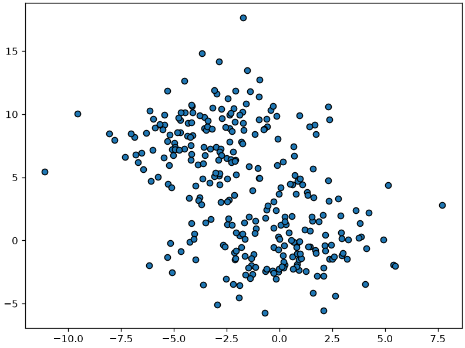
Initialization (Random)
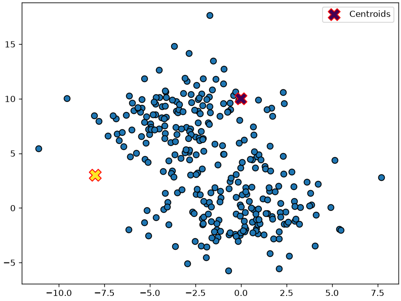
Assignment (1)
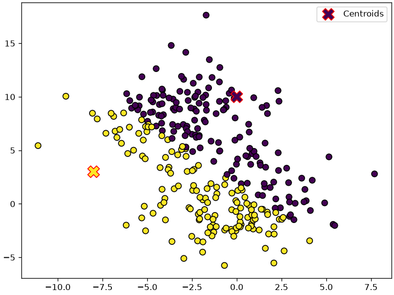
Update (1)
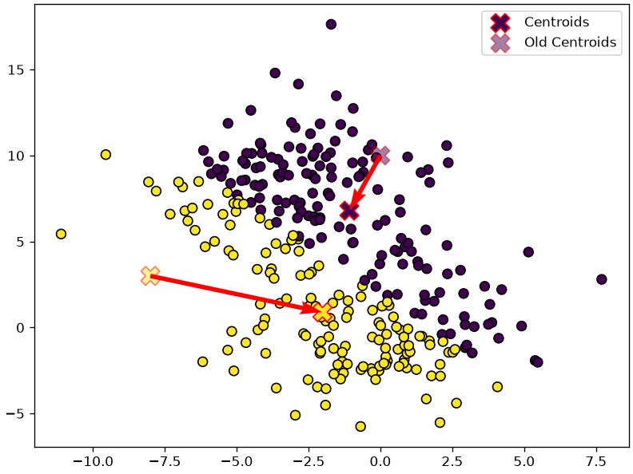
Assignment (2)
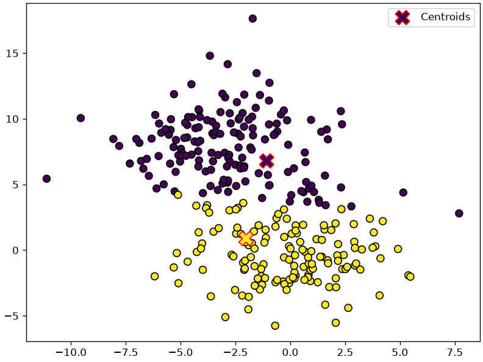
Update (2)
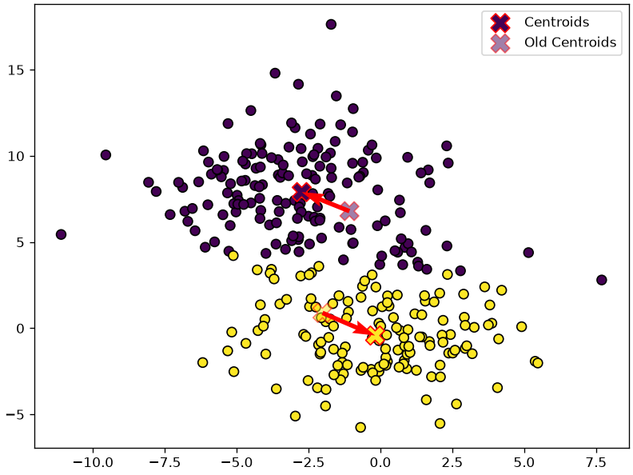
Assignment (3)
Update (3)
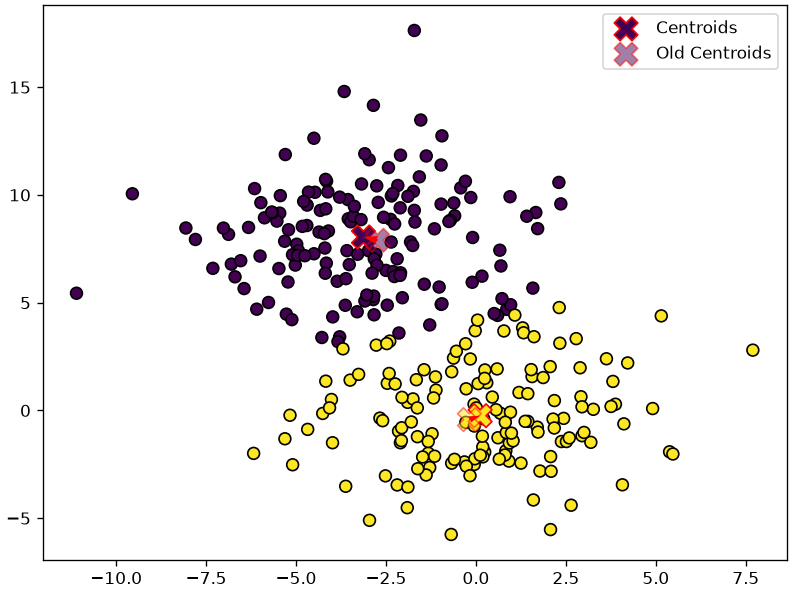
Assignment (4)
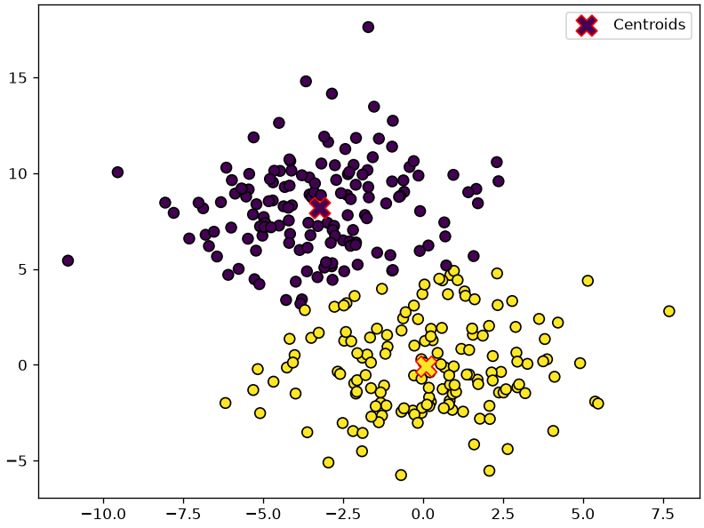
Update (4)
The optimization procedure terminates here as the centroids did not move in the last update step. The data is now clustered in two groups.
The plot below shows the value of the cost function at the end of each iteration:
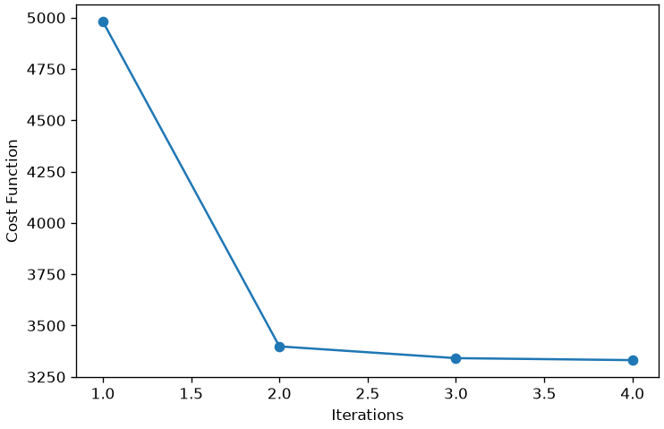
Choosing the Right Value for K
In the K-Means clustering algorithm, K is a hyper-parameter. This means that it is a parameter of the method affecting the final model we obtain after the optimization procedure, but its value is not automatically determined by the optimization procedure.
One common approach to determine the values of hyper-parameters is to make some guesses and fit different models with the guessed values of the hyper-parameters. We can then choose the model which has the “best value” of the considered hyper-parameters.
When it turns to determining the optimal K value for K-Means clustering, there are two main techniques which are commonly used: the elbow method and the silhouette method, which are discussed in the following.
Note that these are both heuristic methods not giving many guarantees on the final selection of K, but they can still help decide on the number of clusters, in particular if guided by an intuition of what a good value of K would look like.
Elbow Method
The elbow method consists in fitting K-Means models for different values of K. For each K, we then plot the final value of the cost function. We expect that as K increases, the cost will decrease. Indeed, if K is very large (even larger than it should be), we will anyway get a smaller cost due to the fact that the presence of more clusters will inevitably lower their individual variances.
However, we expect the cost function to slow the speed of decrease in the presence of the optimal (or a good) K. This is called the “elbow point” as the curve should look like an elbow. We can see it in the example below:
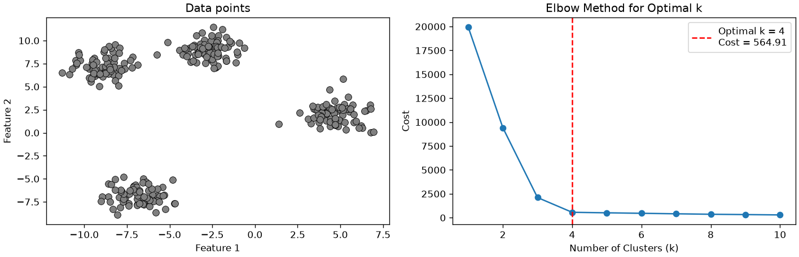
Silhouette Method
The silhouette method tries to assess how good a given clustering model is by measuring how well the data is grouped in the identified clusters. This is done by computing, for each data point a score indicating whether how well the data point fits the assigned cluster with respect to all others.
If the model is a good one (hence a good K value), we would expect each data point to fit well its assigned cluster and not to fit well any other cluster. If this does not happen, it means that the clusters are not very well separated and we either have more or less clusters.
To do so, for a given data point i assigned to cluster C_I, the silhouette method computes the following score:
a(i) = \frac{1}{|C_I|-1} \sum_{j \in C_I, i \neq j} d(i,j)
where d(i,j) is the Euclidean distance between data point i and data point j. In practice, the score a(i) is the average distance of data point i with any other data point assigned to the same cluster. We expect this number to be small if the cluster has a low variance.
We now want to compare this number to the value we would have if i were to be assigned to another cluster C_J. In particular, we will choose the cluster C_J which minimizes the average distance. This is done by computing the following score:
b(i) = \min_{J \neq I} \frac{1}{|C_J|} \sum_{j \in C_J} d(i,j)
Now we compare a(i) with b(i). Ideally, a(i) should be much smaller than b(i). If this happens, this means that the data point i fits in the cluster C_I much better than it would in any other cluster. To do so, we compute the silhouette score of data point i as follows:
s(i) = \begin{cases}\frac{b(i)-a(i)}{\max\{a(i),b(i)\}} & \text{ if } |C_I|>1\\0 & \text{ otherwise}\end{cases}
The obtained score is such that:
-1 \leq s(i) \leq 1
In practice:
- A value of s(i) close to 1 is obtained when a(i) << b(i), meaning that i fits in C_I much better than it would fit in any other cluster;
- A value of s(i) close to -1 is obtained when a(i) >> b(i), meaning that another cluster C_J exists in which a(i) fits better.
- A value of s(i) close to 0 indicates that the data point is close to the border between two natural clusters.
The score above is arbitrarily set to 0 if |C_I|=1 as, in that case, the cluster would only contain the data point i. Note that this is an assumption of neutrality.
The correct number of clusters is usually chosen by showing the silhouette plot, which displays all the silhouette scores of data points within each clusters, arranged from largest to smallest. The plots below are taken from the scikit-learn documentation and show examples of silhouette plots for different choices of K in an example dataset:
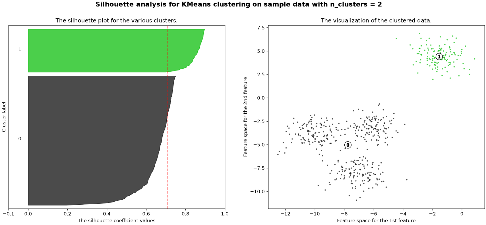
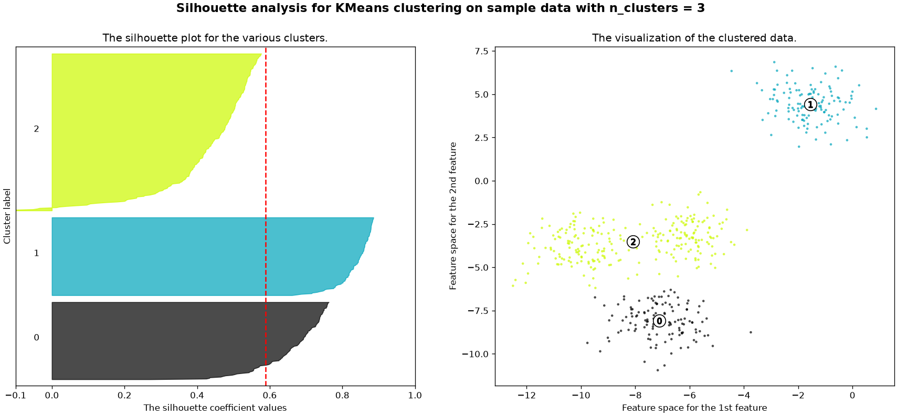
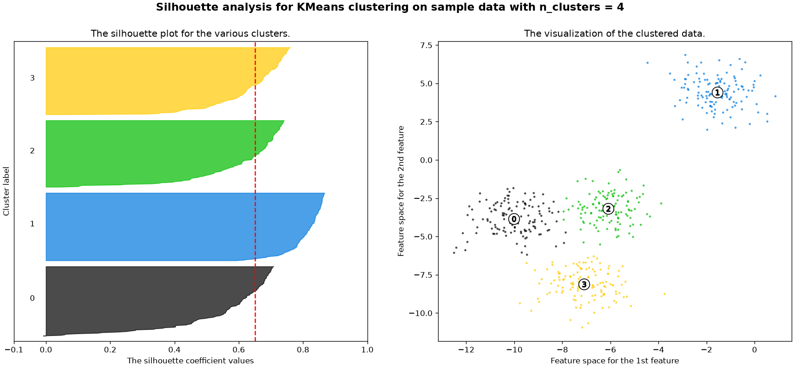
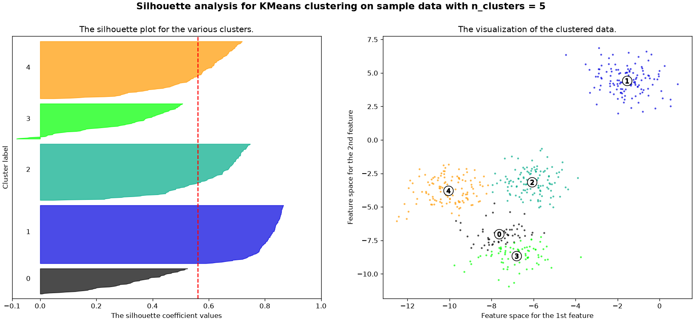
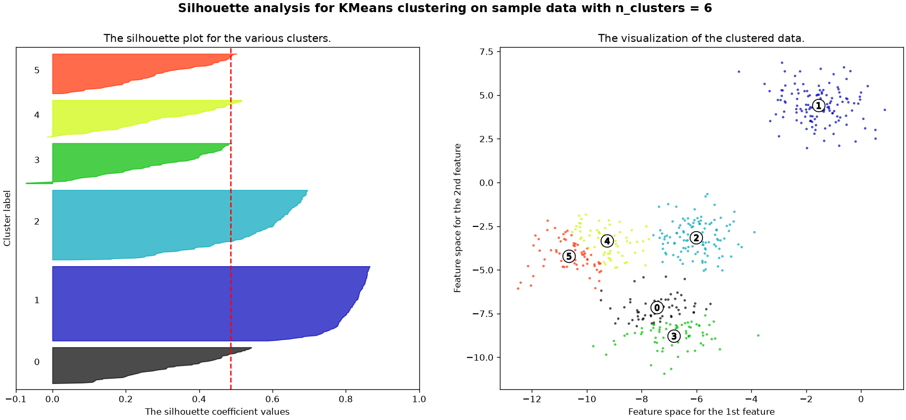
The vertical line in red displays the average silhouette score. Good choices of cluster numbers will have silhouette plots which achieve values similar to each other and close to the average one. For example n=2 and n=4 seem to be the best ones.
In practice, it is also useful to plot the average silhouette score versus the number of clusters and choose value of K which maximizes the average score.
Such plot would be as follows for the previous example:
plt.plot(range_n_clusters,silhouettes, '-o')
plt.show()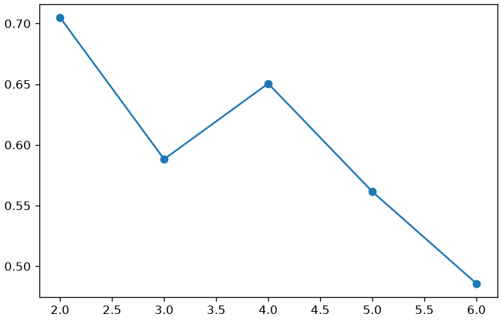
The plot below shows another example of such plot for a different dataset:
import numpy as np
import matplotlib.pyplot as plt
from sklearn.cluster import KMeans
from sklearn.datasets import make_blobs
from sklearn.metrics import silhouette_score
# Generate synthetic data
X, y = make_blobs(n_samples=300, centers=4, random_state=42)
# Function to compute K-means silhouette score for a given model and data
def compute_kmeans_silhouette(model, data):
labels = model.predict(data)
return silhouette_score(data, labels)
# Range of k values to test
k_values = range(2, 11)
silhouette_scores = []
# Compute silhouette score for each k
for k in k_values:
kmeans_model = KMeans(n_clusters=k, random_state=42, n_init=10)
kmeans_model.fit(X)
silhouette = compute_kmeans_silhouette(kmeans_model, X)
silhouette_scores.append(silhouette)
# Find the optimal number of clusters using the silhouette method
optimal_k_silhouette = k_values[np.argmax(silhouette_scores)]
optimal_silhouette = np.max(silhouette_scores)
# Create subplots
fig, axs = plt.subplots(1, 2, figsize=(12, 4))
# Plot the data on the left
axs[0].scatter(X[:, 0], X[:, 1], c='gray', marker='o', edgecolors='k', s=50, linewidth=0.5)
axs[0].set_title('Data points')
axs[0].set_xlabel('Feature 1')
axs[0].set_ylabel('Feature 2')
# Plot silhouette scores on the right
axs[1].plot(k_values, silhouette_scores, marker='o')
axs[1].set_title('Silhouette Method for Optimal k')
axs[1].set_xlabel('Number of Clusters (k)')
axs[1].set_ylabel('Silhouette Score')
# Highlight the optimal number of clusters
axs[1].axvline(x=optimal_k_silhouette, color='red', linestyle='--', label=f'Optimal k = {optimal_k_silhouette}\nSilhouette = {optimal_silhouette:.2f}')
axs[1].legend()
plt.tight_layout()
plt.show()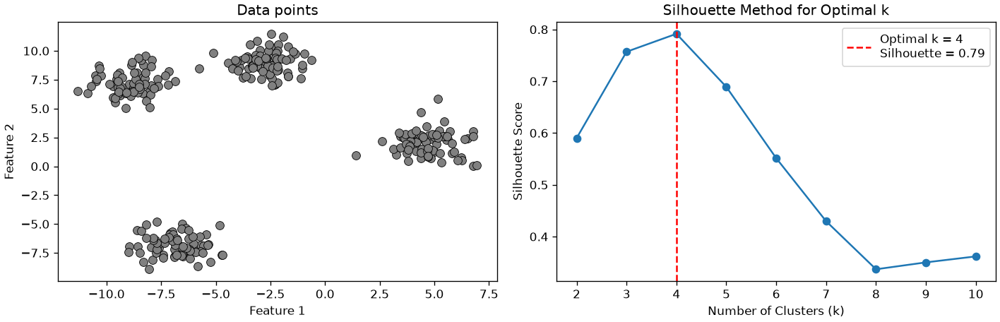
Other Clustering Algorithms
It is important to note that various clustering algorithms exist beyond the commonly discussed k-means method. While k-means is a popular and widely used algorithm for partitioning data into distinct groups based on similarity, it is one approach among many. Numerous other clustering algorithms offer different perspectives and address specific challenges. Some examples include hierarchical clustering, DBSCAN (Density-Based Spatial Clustering of Applications with Noise), and spectral clustering. These alternatives provide unique strengths and are tailored to different types of data and scenarios. While our focus has been on understanding clustering in general and the k-means algorithm in particular, it is important to know that other approaches may be more suitable depending on the specific problem at hand. In the next lectures, we will see Gaussian Mixture Models (GMMs), a probabilistic model for density estimation which can also be interpreted as a clustering algorithm.
Lab: K-Means Clustering for Customer Segmentation
In this lab, we will apply the K-Means algorithm to a classic, real-world business problem: Customer Segmentation.
The Goal
Our goal is to use K-Means to “discover” natural groups within a mall’s customer base. We’ll use a dataset of mall customers and their Annual Income and Spending Score.
By finding these clusters, a marketing team could create targeted campaigns. For example, a “high income, low spending” group needs a different message than a “low income, high spending” group.
The Workflow
- Load and explore the data (using a
pairplotto spot relationships). - Prepare the data: Select our features and, most importantly, scale them.
- Find the best K: Use both the Elbow Method and the Silhouette Method to determine the optimal number of clusters.
- Fit the final model: Train our final K-Means model with the best K.
- Visualize and Interpret: Plot the final clusters and, most importantly, interpret what they mean from a business perspective.
import pandas as pd
import numpy as np
import matplotlib.pyplot as plt
import seaborn as sns
# Import the tools for clustering
from sklearn.cluster import KMeans
from sklearn.preprocessing import StandardScaler
from sklearn.metrics import silhouette_score, silhouette_samplesStep 1: Load and Explore the Data
We’ll load the “Mall Customers” dataset from a public URL. This dataset is perfect for clustering.
# Load the dataset. Not served from the site: the source grants no licence, so we read
# it from the original URL rather than redistribute it. See archive/datasets/README.md.
url = ("https://gist.githubusercontent.com/pravalliyaram/5c05f43d2351249927b8a3f3cc3e5ecf/"
"raw/8bd6144a87988213693754baaa13fb204933282d/Mall_Customers.csv")
df = pd.read_csv(url)
# Rename columns for easier access
df = df.rename(columns={
'Annual Income (k$)': 'Income',
'Spending Score (1-100)': 'SpendingScore'
})
print(df.head())
print("\n--- Data Info ---")
df.info() CustomerID Gender Age Income SpendingScore
0 1 Male 19 15 39
1 2 Male 21 15 81
2 3 Female 20 16 6
3 4 Female 23 16 77
4 5 Female 31 17 40
--- Data Info ---
<class 'pandas.core.frame.DataFrame'>
RangeIndex: 200 entries, 0 to 199
Data columns (total 5 columns):
# Column Non-Null Count Dtype
--- ------ -------------- -----
0 CustomerID 200 non-null int64
1 Gender 200 non-null object
2 Age 200 non-null int64
3 Income 200 non-null int64
4 SpendingScore 200 non-null int64
dtypes: int64(4), object(1)
memory usage: 7.9+ KBLet’s use seaborn.pairplot to visualize all the relationships. Pay close attention to the Income vs. SpendingScore plot.
# We'll drop CustomerID and make 'Gender' a color
sns.pairplot(df.drop('CustomerID', axis=1), hue='Gender', diag_kind='kde')
plt.show()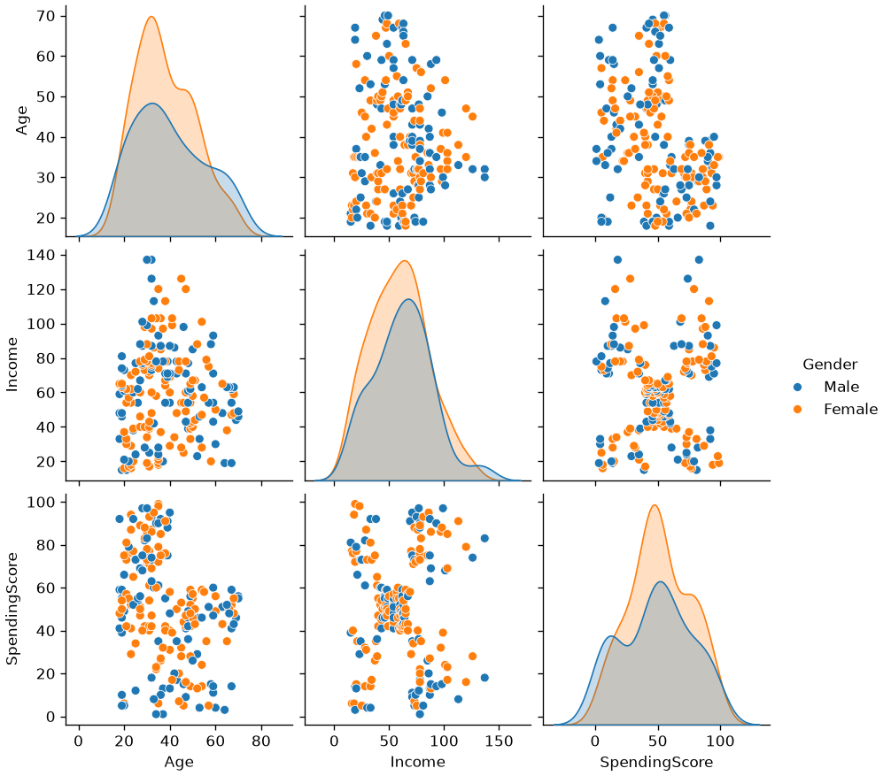
Step 2: Prepare and Scale the Data
The pairplot confirms our hypothesis: the Income vs. SpendingScore plot shows at least 5 distinct, non-linear groups of customers.
We will focus our clustering on just these two features.
Crucially, Income (15-137) and SpendingScore (1-99) are on different scales. K-Means uses Euclidean distance, so if we don’t scale, the Income feature will completely dominate the SpendingScore. We must use StandardScaler.
# 1. Select the features for clustering
X = df[['Income', 'SpendingScore']].values
# 2. Initialize the scaler
scaler = StandardScaler()
# 3. Fit the scaler and transform the data
X_scaled = scaler.fit_transform(X)
# Let's plot the scaled data
plt.figure(figsize=(8, 6))
sns.scatterplot(x=X_scaled[:, 0], y=X_scaled[:, 1], s=50)
plt.title('Scaled Customer Data')
plt.xlabel('Annual Income (Standardized)')
plt.ylabel('Spending Score (Standardized)')
plt.show()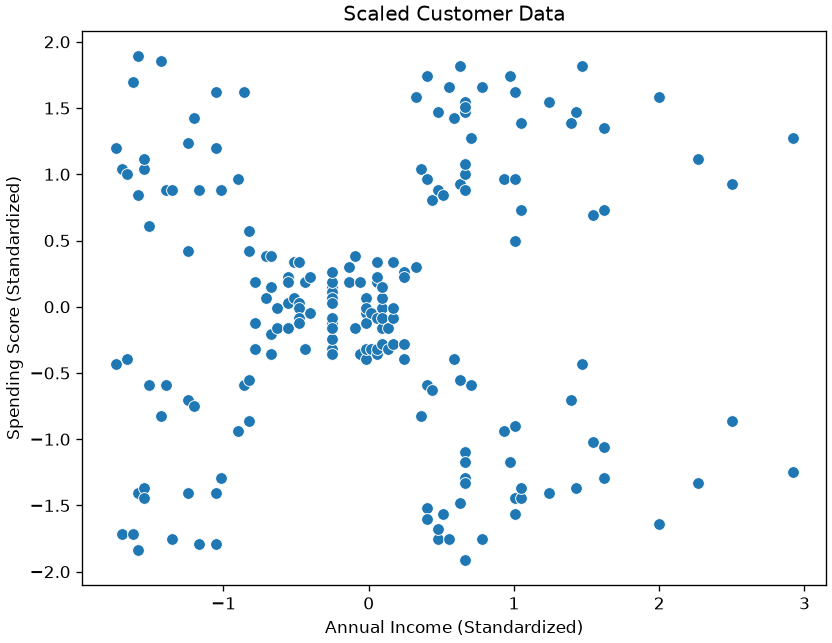
Step 3: Find the Best K with the Elbow Method
Now we’ll use the Elbow Method. We will run K-Means for K=1 through K=10 and plot the Inertia (the J cost function, or WCSS). We are looking for the “elbow” where the decrease in cost dramatically slows down.
# We'll use the scaled data from now on
k_values = range(1, 11)
inertias = []
for k in k_values:
kmeans = KMeans(n_clusters=k, random_state=42, n_init=10)
kmeans.fit(X_scaled)
inertias.append(kmeans.inertia_) # .inertia_ is the WCSS (our cost function J)
# Plot the elbow curve
plt.figure(figsize=(8, 5))
plt.plot(k_values, inertias, 'o-')
plt.title('Elbow Method for Optimal K')
plt.xlabel('Number of Clusters (K)')
plt.ylabel('Inertia (WCSS)')
plt.xticks(k_values)
plt.grid(True, linestyle='--', alpha=0.6)
# Highlight the "elbow"
plt.axvline(x=5, color='red', linestyle='--', label='Elbow Point (K=5)')
plt.legend()
plt.show()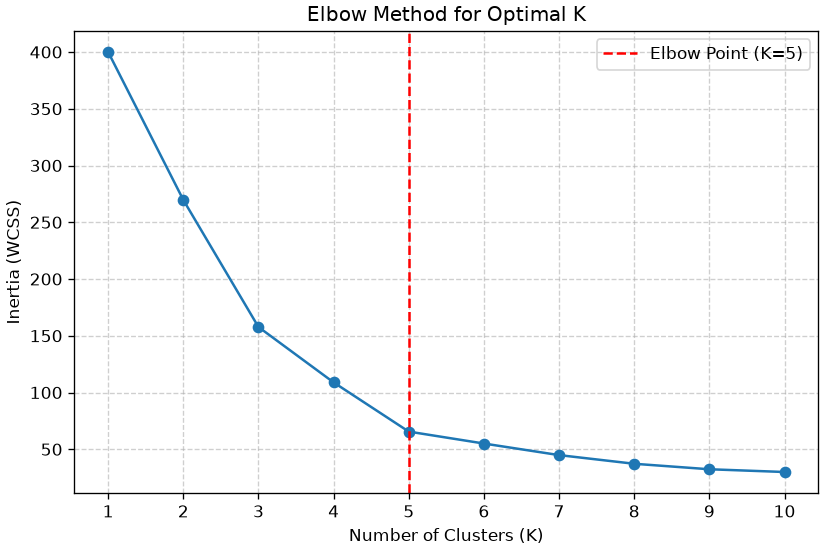
The elbow shows a clear “bend” appearing at K=5. The drop in inertia from 5 to 6 is much smaller than the drop from 4 to 5.
Let’s confirm this with the Silhouette Method.
# We must start from K=2
k_values_sil = range(2, 11)
silhouette_scores = []
for k in k_values_sil:
kmeans = KMeans(n_clusters=k, random_state=42, n_init=10)
labels = kmeans.fit_predict(X_scaled)
# Calculate the average silhouette score
score = silhouette_score(X_scaled, labels)
silhouette_scores.append(score)
# Plot the silhouette scores
plt.figure(figsize=(8, 5))
plt.plot(k_values_sil, silhouette_scores, 'o-')
plt.title('Silhouette Method for Optimal K')
plt.xlabel('Number of Clusters (K)')
plt.ylabel('Average Silhouette Score')
plt.xticks(k_values_sil)
plt.grid(True, linestyle='--', alpha=0.6)
# Highlight the best K
best_k_sil = k_values_sil[np.argmax(silhouette_scores)]
plt.axvline(x=best_k_sil, color='red', linestyle='--', label=f'Best K = {best_k_sil}')
plt.legend()
plt.show()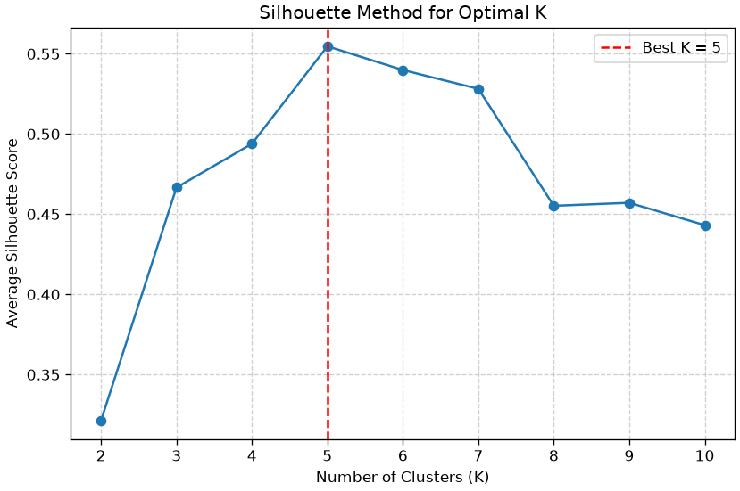
Step 4: Fit and Interpret the Final Model
The Silhouette plot confirms it! The highest score (the best cluster separation) is achieved at K=5.
Both methods agree. We will now build our final model using K=5 and, most importantly, interpret the results.
# 1. Fit the final model with K=5
final_kmeans = KMeans(n_clusters=5, random_state=42, n_init=10)
final_labels = final_kmeans.fit_predict(X_scaled)
# 2. Get the cluster centers (on the *scaled* data)
final_centers_scaled = final_kmeans.cluster_centers_
# 3. Add the cluster labels back to our *original* dataframe
df['Cluster'] = final_labels
# 4. Plot the final clustered data (using the *original*, unscaled data)
plt.figure(figsize=(10, 8))
sns.scatterplot(x='Income', y='SpendingScore', data=df,
hue='Cluster', palette='viridis', s=100, alpha=0.9)
# 5. We must "inverse_transform" the centers to plot them on the original scale
final_centers_original = scaler.inverse_transform(final_centers_scaled)
# Plot the cluster centers
plt.scatter(final_centers_original[:, 0], final_centers_original[:, 1],
marker='X', s=300, c='red',
edgecolor='black', label='Cluster Centers')
plt.xlabel('Annual Income (k$)')
plt.ylabel('Spending Score (1-100)')
plt.legend()
plt.grid(True, linestyle='--', alpha=0.5)
plt.show()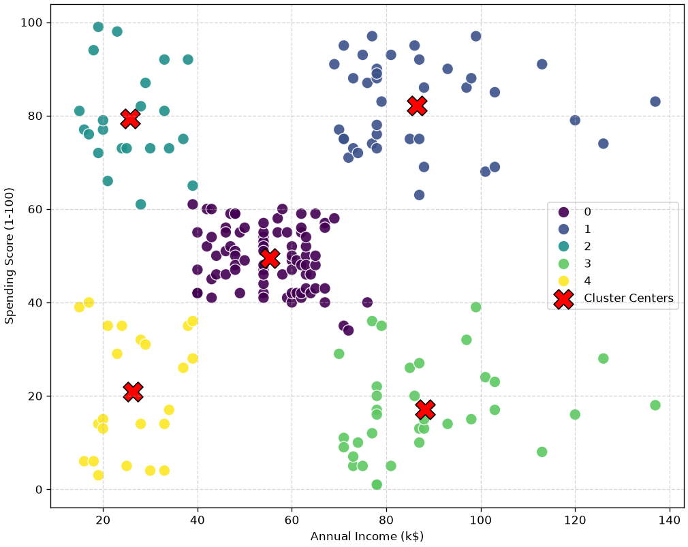
Step 5: Business Interpretation
This is the most important step. What do these 5 clusters mean? Let’s analyze the Income vs. SpendingScore for each group.
We can use .groupby() to see the “average” customer in each cluster.
# Calculate the mean Income and SpendingScore for each cluster
cluster_analysis = df.groupby('Cluster')[['Income', 'SpendingScore']].mean()
print(cluster_analysis) Income SpendingScore
Cluster
0 55.296296 49.518519
1 86.538462 82.128205
2 25.727273 79.363636
3 88.200000 17.114286
4 26.304348 20.913043Analysis of Segments
By looking at the plot and the table, we can give each cluster a clear, descriptive name:
- Cluster 0: “The Standard”
- Profile: Average Income, Average Spending Score.
- Interpretation: This is the large, “normal” group of customers.
- Cluster 1: “The Targets” (or “VIPs”)
- Profile: High Income, High Spending Score.
- Interpretation: The ideal customer. They have money and they love to spend it.
- Cluster 2: “The Risk” (or “Careless”)
- Profile: Low Income, High Spending Score.
- Interpretation: Spend a lot, but have low income. (e.g., college students).
- Cluster 3: “The Careful Rich”
- Profile: High Income, Low Spending Score.
- Interpretation: They have money, but don’t spend it. A key group to target with different marketing.
- Cluster 4: “The Savers”
- Profile: Low Income, Low Spending Score.
- Interpretation: Cautious customers who don’t spend much.
Conclusion: K-Means successfully partitioned the data into five distinct, meaningful groups that a business could now build specific marketing strategies for.
Going Further: Clustering in 3D (Age, Income, Spending)
The 2D visualization on Income and SpendingScore was a perfect way to understand how K-Means works. But in a real scenario, we’d want to use all the relevant information we have.
Let’s try to cluster these customers again, but this time using three features:
AgeIncomeSpendingScore
The New Challenge: Preprocessing and Visualization
- Preprocessing: All three features (
Age,Income,SpendingScore) are on different scales. We must useStandardScaleron all of them. - Visualization: We can no longer use a simple 2D scatter plot. We will have to use a 3D scatter plot to see our clusters.
from sklearn.preprocessing import StandardScaler
from sklearn.pipeline import Pipeline
# 1. Select the features for clustering
X_3D = df[['Age', 'Income', 'SpendingScore']].values
# 2. Initialize the scaler
scaler_3D = StandardScaler()
# 3. Fit the scaler and transform the data
X_scaled_3D = scaler_3D.fit_transform(X_3D)
print(f"New processed data shape: {X_scaled_3D.shape}")New processed data shape: (200, 3)Choosing K Again, in Three Dimensions
Now that we have our new, 3-dimensional X_scaled_3D data, we must re-run our Elbow and Silhouette methods to find the best K for this new feature space.
# --- 1. Elbow Method (on 3D data) ---
k_values = range(1, 11)
inertias_3D = []
for k in k_values:
kmeans = KMeans(n_clusters=k, random_state=42, n_init=10)
kmeans.fit(X_scaled_3D)
inertias_3D.append(kmeans.inertia_)
# --- 2. Silhouette Method (on 3D data) ---
k_values_sil = range(2, 11)
silhouette_scores_3D = []
for k in k_values_sil:
kmeans = KMeans(n_clusters=k, random_state=42, n_init=10)
labels = kmeans.fit_predict(X_scaled_3D)
score = silhouette_score(X_scaled_3D, labels)
silhouette_scores_3D.append(score)
# --- 3. Plot the results ---
fig, (ax1, ax2) = plt.subplots(1, 2, figsize=(16, 6))
# Elbow plot
ax1.plot(k_values, inertias_3D, 'o-')
ax1.set_title('Elbow Method (3D Features)')
ax1.set_xlabel('Number of Clusters (K)')
ax1.set_ylabel('Inertia (WCSS)')
ax1.set_xticks(k_values)
ax1.grid(True, linestyle='--', alpha=0.6)
# Silhouette plot
ax2.plot(k_values_sil, silhouette_scores_3D, 'o-')
ax2.set_title('Silhouette Method (3D Features)')
ax2.set_xlabel('Number of Clusters (K)')
ax2.set_ylabel('Average Silhouette Score')
ax2.set_xticks(k_values_sil)
ax2.grid(True, linestyle='--', alpha=0.6)
# Highlight the best K
best_k_sil_3D = k_values_sil[np.argmax(silhouette_scores_3D)]
ax2.axvline(x=best_k_sil_3D, color='red', linestyle='--', label=f'Best K = {best_k_sil_3D}')
ax2.legend()
plt.show()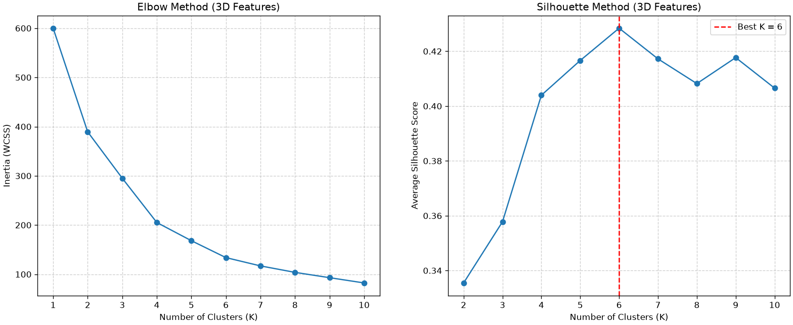
Fitting and Interpreting the 3D Model
The Elbow method is again a bit ambiguous (maybe K=5 or K=6?), but the Silhouette plot often shows a clearer peak. Let’s assume for this run the best score was at K=6.
Now, how do we interpret these 6 clusters? We can’t use a 2D plot.
The solution is to:
- Visualize the clusters with a 3D scatter plot.
- Analyze the “profile” of each cluster using
groupby().
# 1. Fit the final model with the best K (e.g., K=6)
best_k = 6
final_kmeans_3D = KMeans(n_clusters=best_k, random_state=42, n_init=10)
final_labels_3D = final_kmeans_3D.fit_predict(X_scaled_3D)
# 2. Add the new cluster labels back to the ORIGINAL DataFrame
df['Cluster_3D'] = final_labels_3D
# 3. Bring the centers back to the original scale, as in the 2D case, so they
# can be plotted on top of the unscaled data
centers_original_3D = scaler_3D.inverse_transform(final_kmeans_3D.cluster_centers_)
# 4. Analyze the cluster profiles using groupby()
# We can now see the average 'Age', 'Income', etc. for each new cluster
cluster_analysis_3D = df.groupby('Cluster_3D')[['Age', 'Income', 'SpendingScore']].mean()
print("--- Average Cluster Profiles (3D Features) ---")
print(cluster_analysis_3D.sort_values(by='Income'))--- Average Cluster Profiles (3D Features) ---
Age Income SpendingScore
Cluster_3D
4 25.000000 25.260870 77.608696
5 45.523810 26.285714 19.380952
0 56.333333 54.266667 49.066667
1 26.794872 57.102564 48.128205
3 32.692308 86.538462 82.128205
2 41.939394 88.939394 16.969697Visualizing the 3D Clusters
Now for the best part. We can use matplotlib’s 3D plotting tools to see the clusters in our new 3D feature space.
plt.figure(figsize=(10, 7)) # Increased figure size slightly for the legend
# Create the "4D" scatter plot
sns.scatterplot(
data=df,
x='Income',
y='SpendingScore',
hue='Cluster_3D', # Color by cluster (categorical)
size='Age', # Vary dot size by Age (continuous)
palette='viridis', # Using viridis to match the 3D plot
alpha=0.9, # Set alpha to 0.6 to see points overlap
s=100 # Base size
)
# --- ADDED THIS PART ---
# Plot the cluster centers
# We use the 'Income' (column 1) and 'SpendingScore' (column 2)
# from our 3D centers array
plt.scatter(
centers_original_3D[:, 1], # x = Income
centers_original_3D[:, 2], # y = SpendingScore
marker='X', # Use a large 'X'
s=300, # Make it big
c='red', # Make it red
edgecolor='black', # With a black border
label='Cluster Centers (3D)' # Add to legend
)
# -----------------------
plt.xlabel('Annual Income (k$)')
plt.ylabel('Spending Score (1-100)')
plt.legend(bbox_to_anchor=(1.05, 1), loc='upper left', borderaxespad=0.)
plt.grid(True, linestyle='--', alpha=0.5)
plt.show()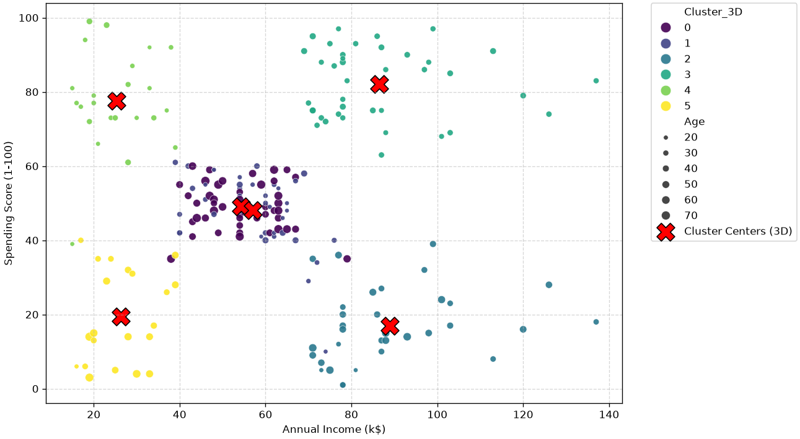
Analysis: What the 4D Plot Tells Us
The plot is now more nuanced, and you’ll notice the optimal number of clusters has changed from 5 to 6. This is not a mistake; it is the key finding of this 3D analysis.
It demonstrates a fundamental concept: changing your feature space can change the optimal structure of the data.
- The K=5 Model (2D): This analysis only knew about
IncomeandSpendingScore. In that 2D space, the Silhouette method told us the best way to group the data was into 5 clusters. - The K=6 Model (3D): This analysis used
Income,SpendingScore, ANDAge. When we added theAgedimension, the “shape” of the data changed. The Silhouette method, when run on this new 3D data, found that 6 clusters was a better, more distinct grouping.
Visual Evidence
You can see why in the plot.
- In the original K=5 plot, the large “Standard” group (blue, Cluster 0) was a single, dense blob in the middle.
- In the new K=6 plot, this same middle area has been split into two new groups: a dark purple cluster (Cluster 0) and a dark blue cluster (Cluster 1).
The 3D model used the new Age feature (which we encode as the size of the dots) to discover this new pattern. It realized that the single “Standard” cluster was actually two different groups that just happened to overlap in the 2D projection. Based on the dot sizes, the model likely found:
- Cluster 0 (Purple): “Standard” customers (average income/spending) who are Younger (small dots).
- Cluster 1 (Blue): “Standard” customers (average income/spending) who are Older (large dots).
This is a much more powerful and useful segmentation, and we only found it by adding more relevant features to our analysis.
Alternative interactive 3D visualization:
import plotly.graph_objects as go
import plotly.express as px
# --- We assume 'df' has the 'Cluster_3D' column ---
# --- and 'centers_original_3D' (unscaled) is in memory ---
# 1. Create the main scatter plot using Plotly Express
# This plots all the individual data points (our customers)
fig = px.scatter_3d(
df,
x='Age',
y='Income',
z='SpendingScore',
color='Cluster_3D', # Color the dots by their cluster
color_continuous_scale='viridis', # Use the same color map
)
# 2. Add the Cluster Centers as a separate "trace"
# We plot these as large, red 'X' markers
fig.add_trace(go.Scatter3d(
x=centers_original_3D[:, 0], # Age
y=centers_original_3D[:, 1], # Income
z=centers_original_3D[:, 2], # SpendingScore
mode='markers',
marker=dict(
color='red',
symbol='x',
size=10,
line=dict(color='black', width=2)
),
name='Cluster Centers'
))
# 3. Show the interactive plot
fig.show()Exercises
- Choosing K. Run K-means for K from 2 to 10 on the mall-customer data. Plot both the elbow curve and the silhouette score. Do they agree? Which would you trust, and what would you do if they disagreed?
- Clusters that are not there. Run K-means with K = 4 on data drawn from a single uniform distribution. Plot the result. It will look convincing — explain why, and say what test would have told you the clusters are spurious.
- Scaling. Cluster the customers with and without standardisation. Which variable dominates the unscaled solution, and why?
- Shapes K-means cannot find. Generate two concentric rings and cluster them with K-means. Explain the failure geometrically, then try DBSCAN on the same data.
- Interpretation. For your best solution, describe each cluster in the language of the business: who are these customers? Then state one thing your description assumes that the clustering itself does not support.
- Stability. Re-run K-means with ten different random seeds. How often do you get the same partition? What does that say about reporting a single clustering as the answer?
References
- Section 10.3.1 of [1]
- Section 2.3.9 of [2]
- Section 9.2 of [2]
- https://en.wikipedia.org/wiki/Silhouette_(clustering)
[1] James, G., Witten, D., Hastie, T., & Tibshirani, R. (2013). An introduction to statistical learning. New York: springer.
[2] Bishop, Christopher M., and Nasser M. Nasrabadi. Pattern recognition and machine learning. Vol. 4. No. 4. New York: springer, 2006.